POSTUPAK · RADNI LIST V01 · FLUIDSIM
Postupak V01 · vježbe V1 i V2 · 3 sata
Postupak V01 — proračun i direktno upravljanje u FluidSIM-u
Cijeli radni list V01 korak po korak, istim redom kao zadatak: proračun stanice za utiskivanje čahura, crtanje i simulacija sheme u FluidSIM-u, prigušivanje odlaznog zraka, direktno upravljanje jednoradnim cilindrom razvodnikom 3/2 NC i NO, zapis simulacije i predaja. Uz svaki korak su snimke zaslona i potpuna rješenja.
- izračunati promjere cilindara, sile, najmanji tlak, potrošnju zraka i odabrati razvodnik za stanicu za utiskivanje čahura
- nacrtati shemu u FluidSIM-u i namjestiti parametre cilindara, razvodnika, pripremne grupe i prigušnog ventila
- provjeriti shemu naredbom Check Superficially i pokrenuti simulaciju
- u simulaciji provjeriti silu pri 6 i 5 bar te djelovanje prigušno-nepovratnog ventila 1V2
- složiti direktno upravljanje jednoradnim cilindrom razvodnikom 3/2 NC i 3/2 NO
- snimiti dijagram put–korak, spremiti shemu i predati rad
O postupku
Ova stranica je postupak za radni list V01: sve što se radi na računalu, od pokretanja FluidSIM-a do predaje, redom kojim je zadano. Tekst zadatka, sheme, pitanja i rješenja isti su kao na stranicama vježbi V1 Proračun pneumatskog sustava i V2 Direktno upravljanje jednoradnim cilindrom; ovdje su dopunjeni koracima u FluidSIM-u i rezultatima simulacije.
Rješenja su skrivena ispod svakog pitanja. Najprije riješite sami, a onda otvorite Prikaži rješenje i usporedite.
Gotove sheme (rješenja) za FluidSIM
- PIH_V01_rjesenje_v01.ct — dio A: shema V1.1 s ventilom 1V2, teret 1705 N i 141 N, dijagram put–korak
- PIH_V02_rjesenje_v01.ct — dio B: shema V2.1 (razvodnik 3/2 NC), dijagram put–korak
- PIH_V02_z6_NO_rjesenje_v01.ct — dio B, zadatak 6: razvodnik 3/2 NO
Datoteke se otvaraju u FluidSIM-P 4 (File → Open). Snimke zaslona na ovoj stranici napravljene su u FluidSIM-P 4.2 s engleskim sučeljem; dijalozi za otvaranje i spremanje datoteka su sustavski, pa su na hrvatskom.
0 · Pokretanje FluidSIM-a i nova shema
- Pokrenite FluidSIM-P (pneumatika). Otvara se glavni prozor s izbornikom, alatnom trakom i prozorom Hierarchical View – Component Library (knjižnica komponenata).
- Novu shemu otvorite naredbom File → New (Ctrl + N). Lijevo je prazna shema, desno knjižnica. Raspored dva prozora jedan uz drugi dobijete naredbom Window → Tile Vertically (Shift + F4).
- Knjižnica je stablo skupina: Supply Elements (izvor zraka, pripremna grupa), Actuators (cilindri), Valves (razvodnici, pod Configurable directional valves i Frequently Used Way Valves), Shutoff Valves and Flow Control Valves (nepovratni, prigušni i prigušno-nepovratni ventili), Measuring instruments i na dnu Miscellaneous (tekst, dijagram stanja). Skupina se otvara i zatvara klikom na + / −.
- Element se postavlja tako da ga povučete mišem iz knjižnice na shemu. Dvoklik na element otvara njegov dijalog s parametrima. Element se briše tipkom Delete, a premješta povlačenjem.
- Vod se crta povlačenjem od priključka do priključka (mali kružić na elementu). Ako vod povučete na postojeći vod, nastaje račvanje (crna točka). Segment voda može se pomaknuti povlačenjem.
- Povećanje i smanjenje prikaza su povećala na alatnoj traci; tipka s okvirom prilagođava prikaz cijeloj shemi.
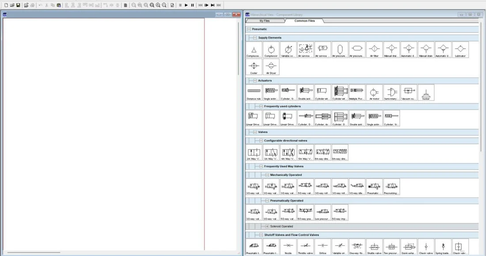
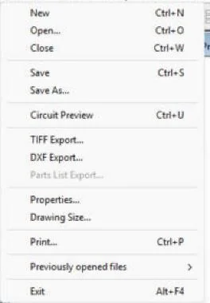
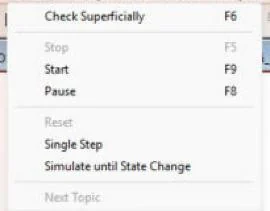
Važno: naziv naredbe za provjeru
U FluidSIM-P 4.2 provjera crteža zove se Execute → Check Superficially (F6), a ne „Check Drawing”. Ista naredba je na alatnoj traci (ikona s kvačicom). Javlja nespojene priključke i vodove koji prolaze preko priključaka.
Simulacija i tipkala
Execute → Start (F9) pokreće simulaciju, Pause (F8) je zaustavlja, Stop (F5) vraća sve u početno stanje i prelazi natrag u uređivanje. Za vrijeme simulacije ručno tipkalo aktivirate klikom mišem: dok držite tipku miša, tipkalo je pritisnuto. Shift + klik zadrži tipkalo pritisnutim i kad pustite miš (korisno kad gibanje traje dulje); otpušta se ponovnim Shift + klikom ili naredbom Stop. Za vrijeme simulacije shema se ne može mijenjati.
Dio A · V1 Proračun pneumatskog sustava
Zadatak
Na montažnoj liniji malih elektromotora gradi se stanica za utiskivanje čahura. Kućište motora ulaže se ručno u napravu, a cilindar 1A1 utiskuje brončanu kliznu čahuru u provrt kućišta. Nakon povrata klipnjače cilindar 2A1 izbacuje gotov sklop na odlagalište. Prema probnom utiskivanju na hidrauličkoj preši, za utiskivanje čahure s propisanim preklopom treba 1500 N, a za izbacivanje sklopa 120 N.
Stanica se priključuje na pogonsku mrežu u kojoj pripremna grupa drži 6 bar pretlaka. Za cilindar 1A1 uzmite stupanj djelovanja η = 0,88, a za manji cilindar 2A1 η = 0,85 (kod malih promjera trenje brtvi ima relativno veći udio). Hod cilindra 1A1 je 60 mm, hod cilindra 2A1 40 mm. Stanica radi 10 ciklusa u minuti, a u svakom ciklusu svaki cilindar jednom izvlači i uvlači. Klipnjača 1A1 treba se izvlačiti brzinom oko 0,2 m/s.
Na raspolaganju su cilindri iz niza standardnih promjera 12, 16, 20, 25, 32, 40, 50, 63, 80 i 100 mm. Uz promjer klipa 20 mm ide klipnjača 8 mm, uz 63 mm klipnjača 20 mm, a uz 80 mm klipnjača 25 mm. Za razvodnike 5/2 uzmimo da su u ponudi tri veličine s nazivnim protokom (pri 6 bar i padu tlaka 1 bar) od 180, 400 i 800 Nl/min. Vaš je zadatak izračunati i obrazložiti izbor obaju cilindara i razvodnika za 1A1, te procijeniti potrošnju zraka cijele stanice.
Za preračun potrošnje zraka na normalno stanje koristite omjer apsolutnih tlakova (6 + 1,013) / 1,013 = 6,923. Tlak u svim zadacima je pretlak ako nije drugačije rečeno.
Sigurnost pri radu
Pažnja
Ovo je računska vježba, ali njezini rezultati kasnije određuju stvarnu napravu. Cilindar koji daje 1,6 kN može zgnječiti prst. Uz izbor promjera zato uvijek razmislite i o zaštiti: dvoručno uključivanje ili zaštitni poklopac, ograničenje brzine i mogućnost ispuštanja tlaka iz sustava. Sila se računa s najnižim tlakom koji se u mreži stvarno može pojaviti, a ne s tlakom kompresora pri isklopu.
Shema
Slika V1.1 prikazuje načelnu shemu stanice. Izvor stlačenog zraka 0Z napaja pripremnu grupu 0Z1, a iz nje se napajaju ručni razvodnici 5/2 s oprugom 1V1 i 2V1. U mirovanju je priključak 1 spojen s priključkom 2, pa su obje klipnjače uvučene; pritiskom na tipkalo razvodnik spaja 1 s 4 i klipnjača izlazi.
A1 · Proračun (pitanja 1–6)
Prvih šest pitanja rješava se računski, prema koracima 1–6 postupka vježbe V1 (formule su u svakom rješenju). Rezultate upišite u tablicu radnog lista; brojevi iz rješenja koriste se poslije u FluidSIM-u.
1. Izračunajte potrebnu površinu klipa cilindra 1A1 i odaberite promjer iz niza standardnih promjera.
Prikaži rješenje
A = F / (p · η) = 1500 N / (0,6 N/mm² · 0,88) = 2841 mm².
D = √(4 · 2841 / π) = 60,1 mm. Prvi veći promjer u nizu je 63 mm. Promjer 50 mm ne dolazi u obzir jer bi dao samo 1037 N.
2. Kolika je stvarna sila izvlačenja i uvlačenja cilindra Ø63/20 pri 6 bar i η = 0,88? Kolika je rezerva sile pri utiskivanju?
Prikaži rješenje
A = π · 63² / 4 = 3117 mm²; Fizv = 0,6 · 3117 · 0,88 = 1646 N.
Apr = 3117 − π · 20² / 4 = 3117 − 314 = 2803 mm²; Fuvl = 0,6 · 2803 · 0,88 = 1480 N.
Rezerva: 1646 / 1500 = 1,097, dakle oko 10 %. To je dovoljno za rasipanje preklopa čahura, ali ne i za veći pad tlaka u mreži (vidi zadatak 3).
3. Koji je najmanji tlak pri kojem cilindar Ø63 još daje 1500 N? Što iz toga zaključujete o namještanju regulatora i o mreži?
Prikaži rješenje
pmin = F / (A · η) = 1500 / (3117 · 0,88) = 0,547 N/mm² = 5,47 bar.
Tlak na ulazu u stanicu ne smije pasti ispod približno 5,5 bar ni u trenutku kada više potrošača u pogonu radi istodobno. Regulator se namješta na 6 bar i ne smije se spuštati; ako mjerenja pokažu padove ispod 5,5 bar, rješenje je lokalni spremnik uz stanicu ili veći cilindar (Ø80), a ne podizanje tlaka iznad dopuštenog.
4. Odaberite promjer izbacivača 2A1 za silu 120 N uz η = 0,85. Zašto promjer 16 mm nije dovoljan iako je blizu izračunatoj vrijednosti?
Prikaži rješenje
A = 120 / (0,6 · 0,85) = 235 mm²; D = √(4 · 235 / π) = 17,3 mm.
Ø16 ima površinu 201 mm² i daje samo 0,6 · 201 · 0,85 = 103 N, što je manje od 120 N. Uvijek se bira prvi veći promjer, dakle Ø20 (314 mm², 160 N). Zaokruživanje na bliži promjer je česta i skupa pogreška.
5. Izračunajte potrošnju zraka stanice po ciklusu i u minuti (10 ciklusa/min), bez gubitaka i s dodatkom od 20 %. Koliki je to udio isporuke kompresora od 800 Nl/min?
Prikaži rješenje
1A1: (3117 + 2803) mm² · 60 mm = 355 220 mm³ = 0,355 l; · 6,923 = 2,46 Nl.
2A1: A = 314 mm², Apr = 314 − 50 = 264 mm²; (314 + 264) · 40 = 23 120 mm³; · 6,923 = 0,16 Nl.
Ukupno 2,62 Nl po ciklusu, odnosno 26,2 Nl/min; s dodatkom 20 % 31,4 Nl/min. To je oko 4 % isporuke kompresora od 800 Nl/min — stanica sama po sebi ne opterećuje kompresor, ali se njezina potrošnja zbraja s ostalim potrošačima.
6. Koliki trenutačni protok zraka treba cilindru 1A1 pri izvlačenju brzinom 0,2 m/s? Koji razvodnik iz ponude odabirete?
Prikaži rješenje
Q = A · v = 3117 mm² · 200 mm/s = 623 450 mm³/s = 0,623 l/s = 37,4 l/min pri radnom tlaku; preračunato na normalno stanje: 37,4 · 6,923 = 259 Nl/min.
Uz rezervu 25 %: 259 · 1,25 = 324 Nl/min. Razvodnik od 180 Nl/min je premalen (klip bi bio znatno sporiji), a razvodnik od 400 Nl/min zadovoljava. Razvodnik od 800 Nl/min bio bi preskup i većih priključaka bez stvarne koristi. Napomena: ovo je gruba preporuka; točniji izbor uzima u obzir i otpor vodova te prigušnih ventila.
A2 · Shema V1.1 u FluidSIM-u
- File → New. Iz Supply Elements povucite izvor stlačenog zraka i pripremnu grupu (Air service unit), a iz Valves uklopni ventil 3/2 s ručnim zasunom ako ga želite prikazati. Skupinu označite kao 0Z1.
- Iz Actuators povucite dva dvoradna cilindra (Double acting cylinder): lijevo 1A1, desno 2A1.
- Dvoklik na 1A1 → kartica Configuration: Double acting, jedna klipnjača (Slika A2.1). Kartica Parameters: max. Stroke 60 mm, Piston diameter 63 mm, Piston rod diameter 20 mm; uključite prikaz Velocity i Force (Slika A2.2). FluidSIM sam izračuna površine: 31,17 cm² i 28,03 cm² — iste kao u pitanju 2.
- Kartica Force profile: Constant force 1705 N (Slika A2.3). Objašnjenje je u okviru ispod.
- Isto za 2A1: hod 40 mm, Ø 20 / 8 mm, teret 141 N.
- Iz Frequently Used Way Valves povucite dva razvodnika 5/2. Dvoklik → Configure Way Valve: lijevo Manually = tipkalo (pushbutton), desno Spring-returned, početni položaj desno polje (Slika A2.4). Standard Nominal Flow Rate: 400 l/min za 1V1 i 180 l/min za 2V1 (izbor iz pitanja 6). U polje Description možete upisati opis (npr. „5/2 razvodnik, tipkalo, opruga”).
- Dvoklik na pripremnu grupu → Air service unit: Nominal Pressure 0,6 MPa = 6 bar (Slika A2.5).
- Spojite vodove: priključak 4 razvodnika → klipna komora cilindra, priključak 2 → prstenasta komora (u mirovanju je 1 spojen s 2, pa je klipnjača uvučena), priključak 1 obaju razvodnika → izlaz pripremne grupe (račvanje). Priključci 3 i 5 ostaju slobodni (ispuh).
- Oznake: iz Miscellaneous povucite Text, dvoklik, upišite 1A1, 2A1, 1V1, 2V1, 0Z1 i uključite Frame Text (okvir). Hrvatska slova (č, ć, ž, š) FluidSIM 4.2 ne prikazuje ispravno — pišite bez njih.
- Execute → Check Superficially (F6). Ispravna shema javlja No superficial errors detected (Slika A2.6). Ako javi Lines through connections, neki vod prolazi preko tuđeg priključka: povucite segment voda u stranu.
- Dijagram put–korak: iz Miscellaneous povucite State Diagram ispod sheme, pa na njega povucite cilindar 1A1 i zatim 2A1. U dijalogu ostavite Position [mm] (Slika A2.7). Dijagram crta položaj klipnjače u vremenu za vrijeme simulacije.
- Spremite: File → Save As, ime
PIH_2026-2027_Prezime_Ime_V01.ct(vidi odjeljak Spremanje i predaja).
Zašto teret 1705 N, a ne 1500 N
Cilindar u FluidSIM-u nema trenja brtvi: daje punu teorijsku silu p · A. Zadani stupanj djelovanja η = 0,88 uzima se u obzir tako da se teret poveća: F / η = 1500 / 0,88 = 1705 N. Tada simulacija vrijedi isto kao proračun: cilindar izlazi tek iznad 1705 / 3117 = 0,547 N/mm² = 5,47 bar. Za 2A1: 120 / 0,85 = 141 N.
Ako upišete 1500 N, cilindar u simulaciji izlazi i pri 5 bar (0,5 · 3117 = 1559 N > 1500 N), što ne odgovara stvarnosti.
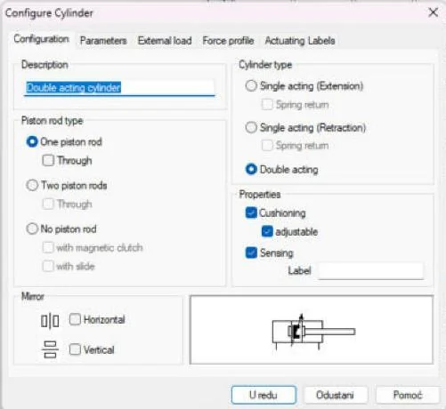
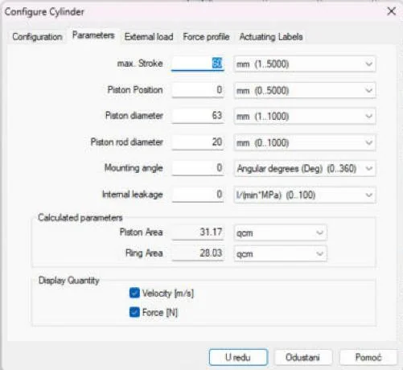
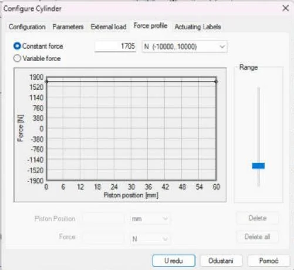
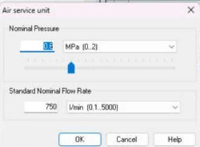
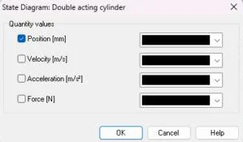
A3 · Simulacija pri 6 i 5 bar
- Execute → Start (F9). Vodovi pod tlakom postanu tamnoplavi, a vodovi bez tlaka svijetloplavi.
- Pritisnite i držite tipkalo 1V1: razvodnik spaja 1 s 4, klipnjača 1A1 izlazi. Pri 6 bar i teretu 1705 N izlazi polako (sila ima malu rezervu: 0,6 · 3117 = 1870 N prema 1705 N). Otpustite tipkalo: opruga vraća razvodnik i klipnjača se uvlači.
- Pritisnite i držite tipkalo 2V1: izbacivač 2A1 izlazi brzo (velika rezerva sile), otpuštanjem se vraća.
- Pause (F8) i pogledajte dijagram put–korak (Slika A3.1).
- Stop (F5). Dvoklik na pripremnu grupu, Nominal Pressure 0,5 MPa. Ponovno Start i držite 1V1: klipna komora je pod tlakom, ali 1A1 ostaje uvučen (v = 0) jer je 0,5 · 3117 = 1559 N < 1705 N (Slika A3.2). To je odgovor pitanja 3 u simulaciji: ispod 5,47 bar stanica ne utiskuje čahuru.
- Vratite tlak na 0,6 MPa i spremite.
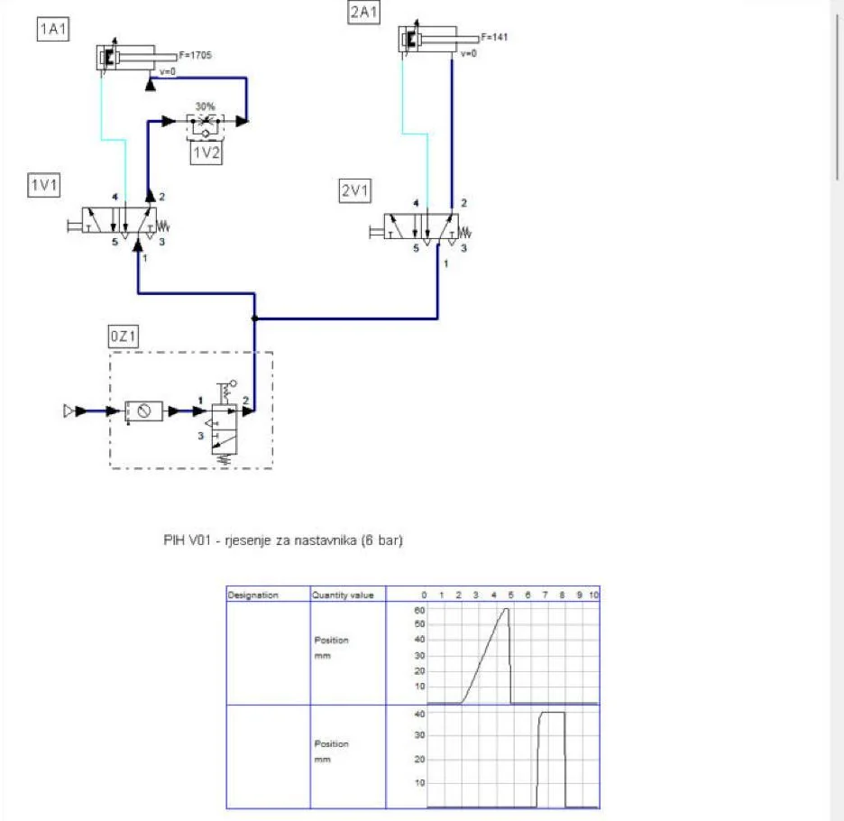
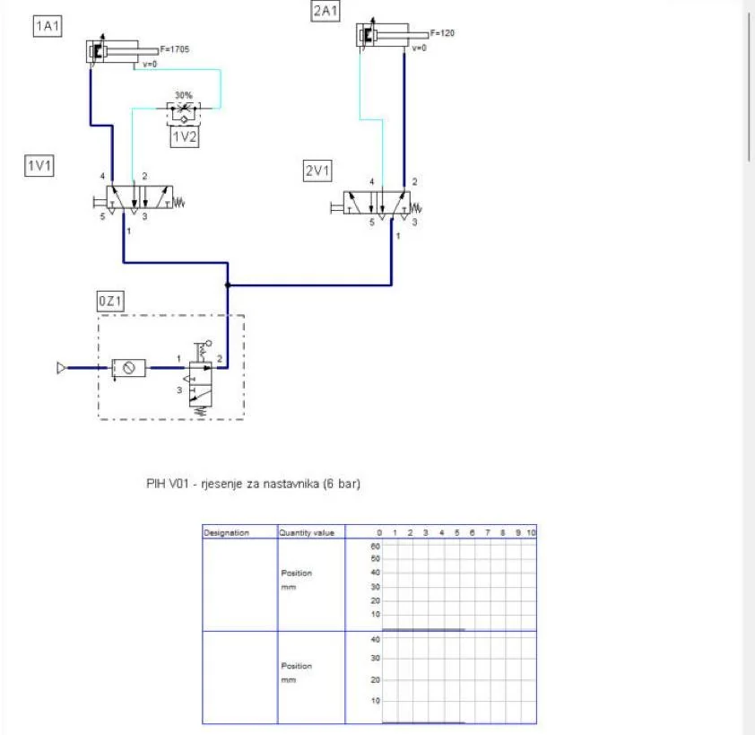
A4 · Prigušno-nepovratni ventil 1V2 i izbor promjera (pitanja 7 i 8)
7. Brzinu izvlačenja 1A1 treba ograničiti na 0,2 m/s. Dopunite shemu sa slike V1.1 prigušno-nepovratnim ventilom 1V2 tako da se prigušuje odlazni zrak.
Prikaži rješenje
Ventil 1V2 ugrađuje se u vod između priključka 2 razvodnika i prstenaste komore cilindra (strana klipnjače). Nepovratni ventil propušta zrak prema cilindru, a odlazni zrak iz prstenaste komore pri izvlačenju prolazi kroz prigušnicu. Klip se tako giba između dva zračna jastuka i hod je miran i pri promjenjivom otporu utiskivanja.
U FluidSIM-u
- Obrišite vod od priključka 2 razvodnika 1V1 do prstenaste komore 1A1 (klik na vod, Delete).
- Iz Shutoff Valves and Flow Control Valves povucite One-way flow control valve (prigušno-nepovratni ventil) i spojite ga u taj vod; označite ga 1V2.
- Pokrenite simulaciju i držite 1V1: zrak iz prstenaste komore mora prolaziti kroz prigušnicu (strelice toka idu kroz simbol prigušnice), a pri uvlačenju zrak ide prema cilindru kroz nepovratni ventil. Ako je obrnuto, ventil je spojen naopako: zamijenite vodove na njegovim priključcima.
- Dvoklik na 1V2 → Opening Level (otvor prigušnice u %) i Display Opening Level (Slika A4.1). Brzinu namještate smanjivanjem otvora i čitate je s dijagrama put–korak: 60 mm za 0,3 s ≈ 0,2 m/s.
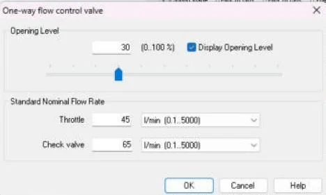
Rezultat u našoj simulaciji: bez tereta i uz otvor od 30 % klipnjača 1A1 prijeđe 60 mm za oko 0,3 s, dakle približno 0,2 m/s. S teretom od 1705 N klipnjača je i bez prigušivanja sporija od 0,2 m/s, jer joj brzinu ograničava mala rezerva sile, a ne prigušnica. U stvarnoj napravi sila utiskivanja djeluje tek na zadnjim milimetrima hoda, pa prigušnica određuje brzinu na većem dijelu hoda.
8. Kolega predlaže da se za 1A1 „za svaki slučaj" ugradi Ø80. Procijenite posljedice za potrošnju zraka i opremu.
Prikaži rješenje
Ø80/25: potrošnja po ciklusu (5027 + 4536) · 60 · 6,923 / 10⁶ = 3,97 Nl, što je oko 1,6 puta više nego za Ø63. Za istu brzinu trebao bi razvodnik od 800 Nl/min i veći vodovi, a sila od 2654 N gotovo je dvostruko veća od potrebne, pa i opasnija. Činjenica je da Ø80 radi i pri 3,4 bar; procjena je da je to opravdano samo ako mjerenja pokažu stalne padove tlaka u mreži — inače je bolji izbor Ø63 uz lokalni spremnik.
Dio B · V2 Direktno upravljanje jednoradnim cilindrom
Zadatak
U otpremi se na kartonske kutije utiskuje žig s oznakom serije. Radnik postavi kutiju uz graničnik i pritisne tipkalo; dok drži tipkalo, žig s jastučićem natopljenim bojom pritišće stijenku kutije. Kada otpusti tipkalo, žig se odmakne. Za čist otisak na valovitom kartonu treba pritisna sila od oko 100 N; veća sila gnječi karton.
Žig pokreće jednoradni cilindar 1A1 s povratnom oprugom, promjera klipa 20 mm i hoda 25 mm. Uzmimo da opruga na kraju hoda djeluje silom 24 N, a gubitak zbog trenja brtvi iznosi 10 % teorijske sile. Cilindrom upravlja ručni razvodnik 3/2 normalno zatvoren s tipkalom i povratnom oprugom (1S1), povezan s cilindrom poliuretanskom cijevi 6/4 mm duljine 1,5 m. Mreža daje 6 bar, a radnik otisne oko 12 kutija u minuti.
Složite sklop na didaktičkoj ploči, pustite ga u rad i provjerite ponašanje, a zatim odgovorite na pitanja. Budući da razvodnik s tipkalom ovdje neposredno upravlja cilindrom, označen je kao signalni element 1S1; u sljedećoj vježbi taj će se posao razdvojiti na signalni i upravljački razvodnik.
Sigurnost pri radu
Pažnja
Sve spojeve radite isključivo s odzračenim sustavom: zatvorite uklopni ventil i provjerite na manometru da je tlak pao na nulu. Cijev se u nepovratni priključak utiskuje do kraja, a vadi se tek nakon pritiska na prsten priključka — nikad povlačenjem pod tlakom. Neučvršćena cijev pod tlakom „bičuje" i može ozlijediti oko, zato pri radu nosite zaštitne naočale. Ne stavljajte prste ispred klipnjače, a zrak iz priključka nikad ne usmjeravajte prema tijelu.
Shema
Shema na slici V2.1 crta se odozdo prema gore, u smjeru toka energije: izvor 0Z i pripremna grupa 0Z1 na dnu, razvodnik u sredini, izvršni element na vrhu. Razvodnik je nacrtan u položaju mirovanja (desno polje, uz oprugu): priključak 2 spojen je s ispuhom 3, a priključak 1 je zatvoren, pa je komora cilindra bez tlaka i opruga drži klipnjaču uvučenu.
Vježba se radi u FluidSIM-u
Koraci postupka vježbe V2 koji se odnose na spajanje na didaktičkoj ploči (cijevi, razdjelni blok, mjerenje vremena štopericom) izvode se u simulaciji. Vremena iz pitanja 7 zadana su u pitanju.
B1 · Shema V2.1 u FluidSIM-u
- File → New. Postavite izvor i pripremnu grupu 0Z1 (0,6 MPa) kao u dijelu A.
- Iz Actuators povucite Single acting cylinder (jednoradni cilindar s oprugom). Dvoklik → Parameters: hod 25 mm, Ø 20 / 8 mm. Oznaka 1A1.
- Iz Configurable directional valves povucite 3/n Way Valve. Dvoklik → lijevo Manually = tipkalo, desno Spring-returned; polja razvodnika: lijevo protok 1 → 2, desno 2 → 3 (ispuh); početni položaj desno polje (Slika B1.1). To je razvodnik 3/2 NC. Oznaka 1S1.
- Spojite: izlaz 0Z1 → priključak 1 razvodnika, priključak 2 → priključak cilindra. Priključak 3 ostaje slobodan (ispuh).
- Check Superficially (F6) → No superficial errors detected.
- Na shemu postavite State Diagram i povucite na njega 1A1 (Position) i 1S1 (Switching position).
- Start (F9). Držite tipkalo 1S1 oko 2 s pa otpustite: klipnjača izlazi dok je tipkalo pritisnuto, a opruga je vraća kad ga otpustite. Zatim tipkalo samo kratko dodirnite (Slika B1.2).
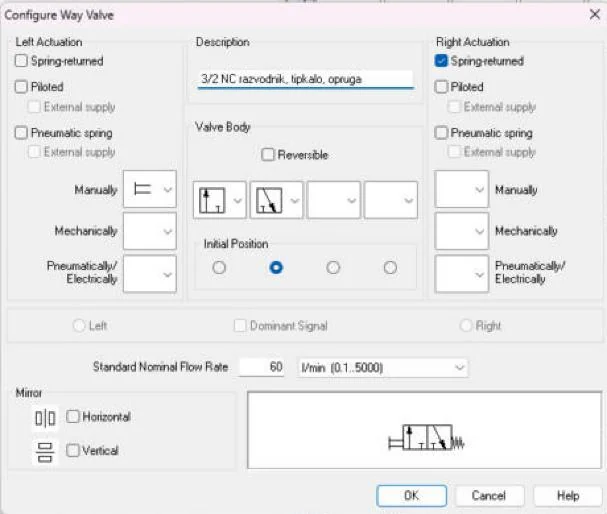
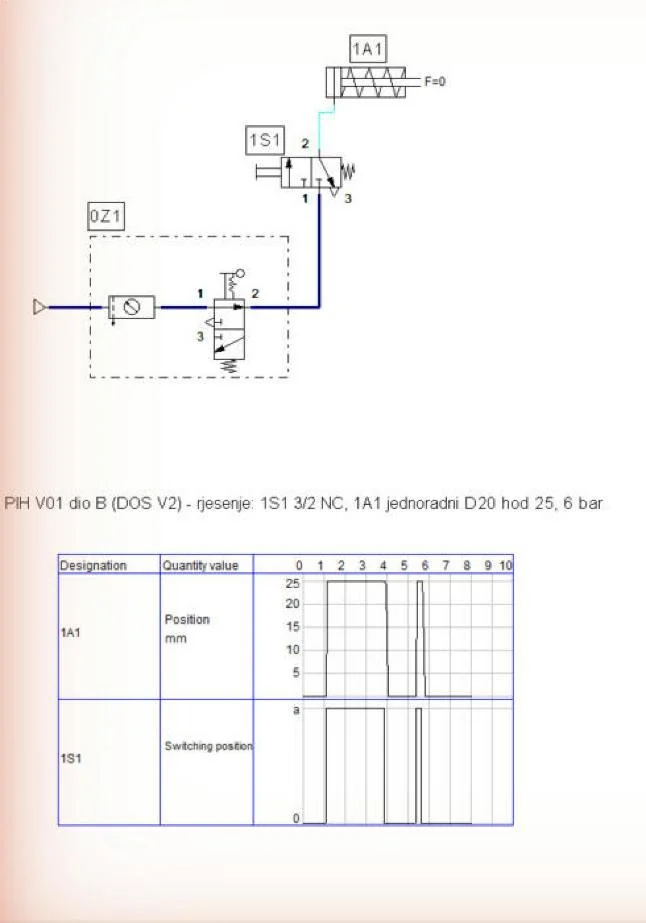
U našoj simulaciji i kratak dodir izvuče klipnjaču do kraja, jer je hod kratak (25 mm), a cilindar mali, pa se napuni u djeliću sekunde. Na stvarnom sklopu s cijevi od 1,5 m kratki dodir često daje samo djelomičan hod.
B2 · Pitanja i zadaci
1. Zašto se za jednoradni cilindar koristi razvodnik 3/2, a ne 2/2? Što bi se dogodilo s razvodnikom 2/2?
Prikaži rješenje
Razvodnik 2/2 ima samo dovod i izlaz: može napuniti komoru, ali je ne može odzračiti. Nakon otpuštanja tipkala zrak bi ostao zarobljen u cilindru i klipnjača bi ostala izvučena. Treći priključak (3) služi upravo za ispuštanje zraka iz komore u okolinu, pa opruga može vratiti klip.
2. Izračunajte teorijsku silu i stvarnu pritisnu silu žiga na kraju hoda pri 6 bar. Je li dovoljna za otisak?
Prikaži rješenje
A = π · 20² / 4 = 314,2 mm²; Ft = 0,6 N/mm² · 314,2 mm² = 188,5 N.
Trenje: 10 % · 188,5 = 18,8 N; opruga na kraju hoda: 24 N. F = 188,5 − 18,8 − 24 = 145,6 N.
To je više od potrebnih 100 N, pa je otisak siguran; višak od oko 45 N može već gnječiti tanji karton (vidi zadatak 3).
3. Na koji tlak treba namjestiti poseban regulator ispred 1S1 da bi pritisna sila bila točno 100 N?
Prikaži rješenje
F = p · A · 0,9 − Fop ⇒ p = (F + Fop) / (0,9 · A) = (100 + 24) / (0,9 · 314,2) = 0,439 N/mm² = 4,4 bar.
Tlak se ne smije sniziti na glavnoj pripremnoj grupi jer bi to utjecalo na sve ostale potrošače; ugrađuje se zaseban regulator tlaka samo za ovaj krug.
4. Izračunajte potrošnju zraka po jednom otisku zajedno s cijevi od 1,5 m (unutarnji promjer 4 mm) i u minuti pri 12 otisaka. Koliki udio otpada na cijev?
Prikaži rješenje
Cilindar: 314,2 mm² · 25 mm = 7854 mm³; cijev: π · 4² / 4 · 1500 = 18 850 mm³. Ukupno 26 704 mm³ = 0,0267 l pri tlaku; · 6,923 = 0,185 Nl po otisku.
U minuti: 12 · 0,185 = 2,22 Nl/min. Na cijev otpada 18 850 / 26 704 = 71 % potrošnje. Kod malih cilindara i dugih vodova vod troši više zraka od samog cilindra — i to je jedan od razloga za indirektno upravljanje.
5. Što se događa ako netko priključak 3 razvodnika zatvori čepom? Kako biste taj kvar prepoznali na stroju?
Prikaži rješenje
Pritiskom na tipkalo klipnjača izlazi normalno, ali nakon otpuštanja zrak iz komore nema kamo izaći: klipnjača ostaje izvučena ili se tek vrlo polako vraća koliko propuštaju brtve. Prepoznaje se po tome što „žig visi" i što pri odvajanju cijevi od cilindra izlazi zrak iako tipkalo nije pritisnuto. Isto se događa ako se prigušivač zvuka na priključku 3 začepi prašinom — zato se prigušivači redovito provjeravaju.
U FluidSIM-u
Dvoklik na priključak 3 razvodnika otvara dijalog Pneumatic connection; u polju Terminator bira se završetak priključka; umjesto ispuha odaberite zatvoreni priključak (čep) i pokrenite simulaciju: nakon otpuštanja tipkala klipnjača ostaje izvučena jer zrak iz komore nema kamo izaći.
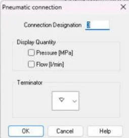
6. Za drugu napravu klipnjača mora biti izvučena u mirovanju (drži zaklopku), a uvlačiti se samo dok je tipkalo pritisnuto. Nacrtajte shemu.
Prikaži rješenje
Koristi se razvodnik 3/2 normalno otvoren: u mirovanju je 1 spojen s 2, a 3 zatvoren, pa je komora pod tlakom. Pritiskom na tipkalo 2 se spaja s 3, komora se odzračuje i opruga uvlači klipnjaču. Nedostatak: pri nestanku zraka zaklopka se ipak spušta, pa rješenje nije prikladno ako ta funkcija ima sigurnosnu ulogu.
U FluidSIM-u
- Spremite shemu dijela B pod novim imenom (File → Save As) i dvokliknite razvodnik 1S1.
- Zamijenite polja razvodnika: lijevo 2 → 3 (ispuh), desno 1 → 2 (protok); početni položaj ostaje desno, uz oprugu (Slika B2.2). To je 3/2 NO.
- Start: u mirovanju je klipnjača izvučena (Slika B2.3); dok je tipkalo pritisnuto, komora se prazni i opruga uvlači klipnjaču (Slika B2.4).
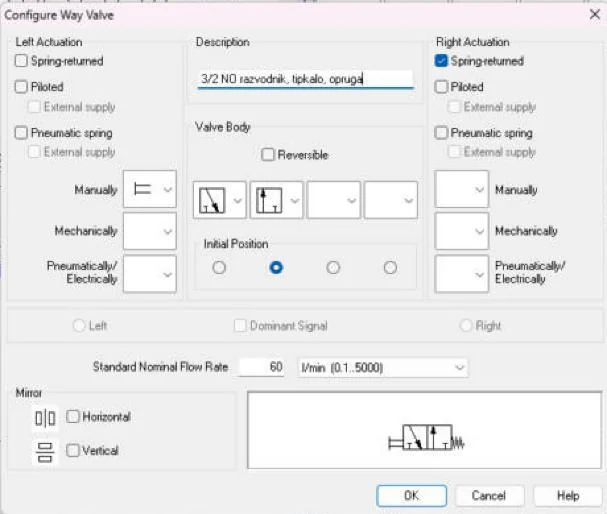
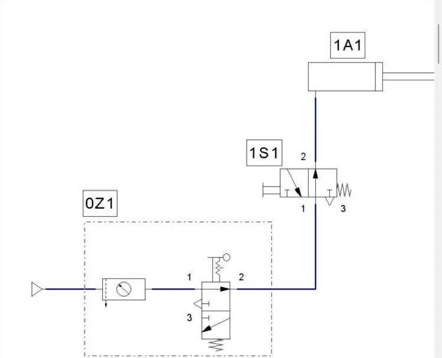
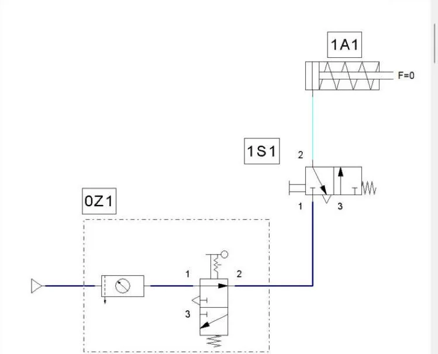
7. Pri mjerenju ste dobili vrijeme izvlačenja 0,15 s s cijevi od 0,5 m i 0,32 s s cijevi od 3 m. Objasnite razliku i izračunajte koliko se zraka po otisku troši s cijevi od 3 m.
Prikaži rješenje
Dulja cijev ima veći obujam koji se prije pomaka klipa mora napuniti, i veći otpor strujanju, pa tlak u komori sporije raste. Obujam cijevi od 3 m: 12,57 mm² · 3000 mm = 37 700 mm³. Ukupno s cilindrom: (37 700 + 7854) · 6,923 / 10⁶ = 0,315 Nl, što je 1,7 puta više nego s cijevi od 1,5 m. (Izmjerena vremena ovdje su primjer; vaša ovise o opremi.)
8. Navedite tri razloga zbog kojih se direktno upravljanje ne koristi za velike cilindre ili kada je tipkalo daleko od cilindra.
Prikaži rješenje
(1) Sav radni zrak prolazi kroz ručni razvodnik, pa bi on za velik cilindar morao biti velik, težak za pritisak i skup. (2) Dugi radni vod između tipkala i cilindra povećava potrošnju zraka i usporava gibanje. (3) Operater drži u ruci element koji izravno pokreće silu; nema mogućnosti za logičke uvjete, zaštitne blokade ni vremenske funkcije. Rješenje je indirektno upravljanje: mali signalni ventil upravlja velikim razvodnikom koji je uz cilindar.
Zapis simulacije
Tablica Zapis: simulacija iz radnog lista, popunjena prema simulaciji u FluidSIM-P 4.2 (rješenje).
| Veličina | Očekivano (proračun / zadatak) | FluidSIM | Komentar |
|---|---|---|---|
| Redoslijed gibanja (A) | 1V1 → 1A1+, otpust → 1A1−; 2V1 → 2A1+, otpust → 2A1− | isto (Slika A3.1) | svaki cilindar gibanje drži dok se drži tipkalo |
| Vrijeme izvlačenja 1A1 (A) | — | oko 2,4 s s teretom 1705 N; oko 0,3 s bez tereta uz otvor 1V2 30 % | s teretom brzinu ograničava mala rezerva sile |
| Tlak (A) | 6 bar; najmanji 5,47 bar | pri 6 bar izlazi, pri 5 bar ne izlazi | teret 1705 N = 1500 N / η |
| Površine 1A1 | 3117 mm² i 2803 mm² | 31,17 cm² i 28,03 cm² | podudara se |
| Redoslijed gibanja (B, NC) | 1A1 vani samo dok je tipkalo pritisnuto | isto (Slika B1.2) | kratak dodir: pun hod u simulaciji |
| Redoslijed gibanja (B, NO) | 1A1 vani u mirovanju, uvlači se dok je tipkalo pritisnuto | isto (Slike B2.3 i B2.4) | zadatak 6 |
| Tlak (B) | 6 bar | 0Z1 = 0,6 MPa | — |
Spremanje i predaja
- File → Save As. U polje Naziv datoteke upišite
PIH_2026-2027_Prezime_Ime_V01.ct(bez kvačica) i kliknite Spremi (Slika S.1). Kasnije spremanje: File → Save (Ctrl + S). - Snimka sheme: File → TIFF Export sprema shemu kao sliku, ili za vrijeme simulacije (nakon Pause) snimite zaslon s dijagramom put–korak (u sustavu Windows: Windows + Shift + S).
- Ispunite radni list (tablice proračuna i zapis simulacije).
- Predajte u sustav za e-učenje: shemu
.ct, snimku zaslona simulacije i ispunjen radni list. Sve datoteke imenujtePIH_2026-2027_Prezime_Ime_….
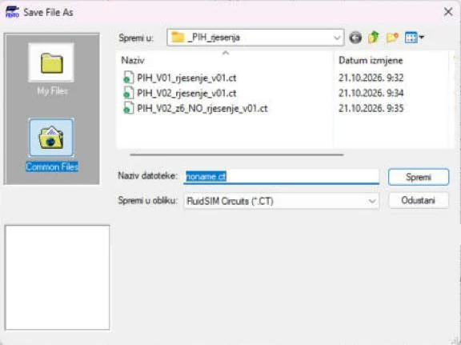
Primjena na vlastiti zadatak P##
Projekt SL-3, vaša varijanta P## (ulazni podaci u „Projektni zadaci P01–P21”): pročitajte opis naprave SL-3 na stranici Projektni zadatak: naprava SL-3 za savijanje lima i svoje ulazne podatke; napišite tehnološki postupak savijanja po koracima i iz njega slijed gibanja.
Kod pitanja: susjed → radni list i ova stranica → nastavnik. AI smijete koristiti uz navođenje što je i kako napravljeno.
Za nastavnika
Dio A · vježba V1
Otvori upute za nastavnika
Priprema
Vježba traje 1 sat (45 min) i nadovezuje se na jedinice o dvoradnim cilindrima i o razvodnoj mreži. Pripremite radni list s tablicom za rezultate (promjer, površine, sile, potrošnja, protok, odabrani razvodnik) i ispis niza standardnih promjera s klipnjačama. Ako polaznici rade u simulacijskom programu, unaprijed složite shemu sa slike V1.1 kako bi provjera trajala nekoliko minuta, a ne pola sata.
Tijek sata
- Uvod i ponavljanje formula F = p · A · η i V = A · s · (p + pa) / pa — 5 min.
- Samostalni proračun zadataka 1–4 (sile i promjeri) — 15 min.
- Zadaci 5 i 6 (potrošnja i protok, izbor razvodnika) — 12 min.
- Zadatak 7 (dopuna sheme) i provjera u simulaciji — 8 min.
- Rasprava o zadatku 8 i zaključak — 5 min.
Očekivani rezultati
1A1: A = 2841 mm², D = 60,1 mm → Ø63/20; Fizv = 1646 N, Fuvl = 1480 N, pmin = 5,47 bar. 2A1: D = 17,3 mm → Ø20/8, 160 N. Potrošnja 2,62 Nl/ciklus, 26,2 Nl/min, s gubicima 31,4 Nl/min. Protok pri izvlačenju 259 Nl/min → razvodnik 400 Nl/min. Prigušno-nepovratni ventil na strani klipnjače, slobodan protok prema cilindru.
Česte pogreške
- Tlak se uvrštava u barima umjesto u N/mm² pa je sila deset puta prevelika ili premala.
- Promjer se zaokružuje na bliži umjesto na prvi veći (Ø16 umjesto Ø20).
- Kod potrošnje zaboravlja se prstenasta komora ili se ne preračunava na normalno stanje.
- Potrošnja po ciklusu miješa se s trenutačnim protokom pri izboru razvodnika — razvodnik se bira prema vršnom protoku, a ne prema prosjeku u minuti.
- Prigušno-nepovratni ventil crta se s nepovratnim ventilom okrenutim tako da prigušuje dovod umjesto odvoda.
Vrednovanje
| Kriterij | Bodovi |
|---|---|
| Ispravna površina, promjer i izbor iz niza za 1A1 i 2A1 | 4 |
| Sile izvlačenja i uvlačenja, rezerva sile i najmanji tlak | 4 |
| Potrošnja zraka po ciklusu i u minuti, s gubicima | 4 |
| Protok i obrazložen izbor razvodnika | 3 |
| Ispravno dopunjena shema (smjer nepovratnog ventila, oznaka 1V2) | 3 |
| Jedinice, zaokruživanje i pregledan zapis postupka | 2 |
| Ukupno | 20 |
Dio B · vježba V2
Otvori upute za nastavnika
Priprema
Vježba traje 2 sata (2 × 45 min) i često je prvo stvarno spajanje na ploči, pa predvidite vrijeme za rukovanje cijevima i priključcima. Za svaku radnu skupinu pripremite komplet elemenata i tri odrezane cijevi. Provjerite da prigušivači zvuka nisu začepljeni i da pripremna grupa ima ispravan manometar. Ako razvodnici ne omogućuju prespajanje u NO, zadatak 6 riješite samo u simulaciji.
Tijek sata
- Uvod: pravila sigurnosti, rukovanje nepovratnim priključcima, čitanje sheme odozdo prema gore — 10 min.
- Slaganje sheme u simulaciji i provjera — 10 min.
- Spajanje na ploči, puštanje u rad i provjera nepropusnosti — 20 min.
- Mjerenje vremena izvlačenja za tri duljine cijevi i ispitivanje pri 3 i 2 bar — 25 min.
- Prespajanje u NO ili simulacija te rješavanje računskih zadataka — 15 min.
- Rastavljanje, pospremanje i kratka rasprava o granicama direktnog upravljanja — 10 min.
Očekivani rezultati
Klipnjača izlazi samo dok je tipkalo pritisnuto; kratki dodir daje djelomičan hod. Vrijeme izvlačenja raste s duljinom cijevi. Pri 2 bar sila je 0,2 · 314,2 · 0,9 − 24 ≈ 33 N, pa žig jedva dodiruje podlogu. Računski: 188,5 N teorijski, 145,6 N stvarno; 4,4 bar za 100 N; 0,185 Nl po otisku, 2,22 Nl/min, cijev 71 %.
Česte pogreške
- Cijev nije utisnuta do kraja u priključak pa pod tlakom iskoči.
- Cilindar se spaja na priključak 1 ili 3 umjesto na 2.
- Promjena spoja radi se pod tlakom.
- U proračunu sile zaboravlja se oduzeti sila opruge, a u potrošnji obujam cijevi.
- Razvodnik se na shemi crta u aktiviranom položaju, s priključcima na lijevom polju.
Vrednovanje
| Kriterij | Bodovi |
|---|---|
| Ispravno i nepropusno spojen sklop, pravilno pušten u rad | 5 |
| Poštivanje pravila sigurnosti (odzračivanje, naočale, rukovanje cijevima) | 3 |
| Mjerenja vremena upisana i protumačena | 3 |
| Računski zadaci 2, 3, 4 i 7 s postupkom | 5 |
| Shema s razvodnikom 3/2 NO (zadatak 6) i odgovori na pitanja 1, 5 i 8 | 4 |
| Ukupno | 20 |
Napomena za FluidSIM
U FluidSIM-u se stupanj djelovanja uvodi teretom F/η (1705 N i 141 N). Gotove sheme za usporedbu su gore na stranici (PIH_V01_rjesenje_v01.ct, PIH_V02_rjesenje_v01.ct, PIH_V02_z6_NO_rjesenje_v01.ct). Provjera crteža je Execute → Check Superficially (F6).